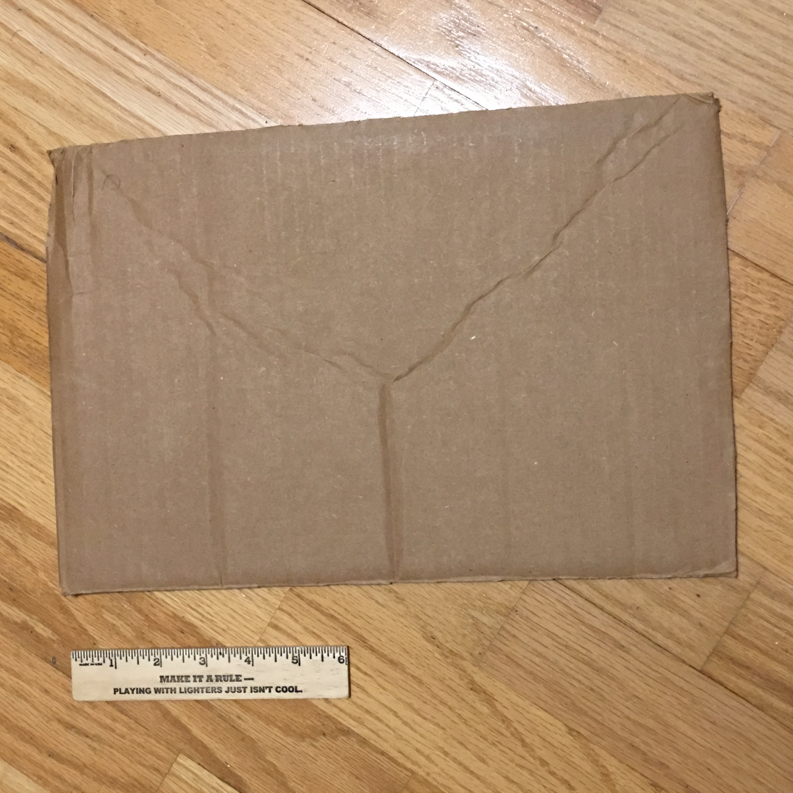
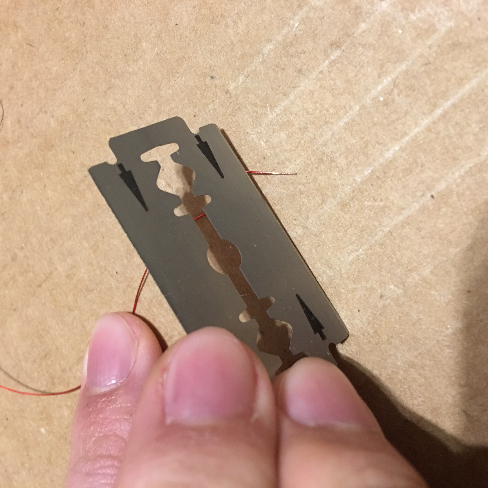
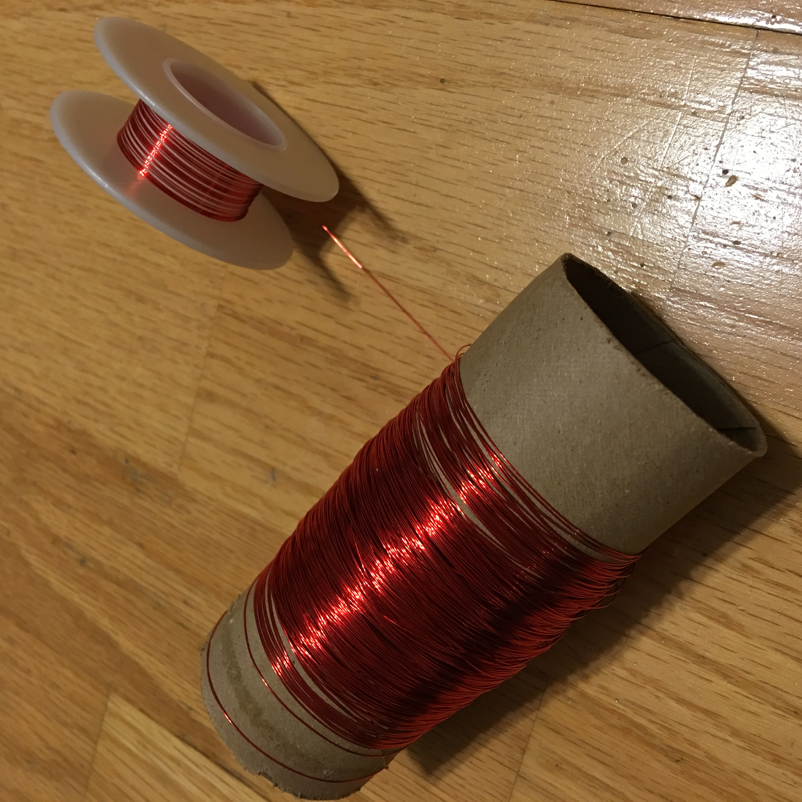
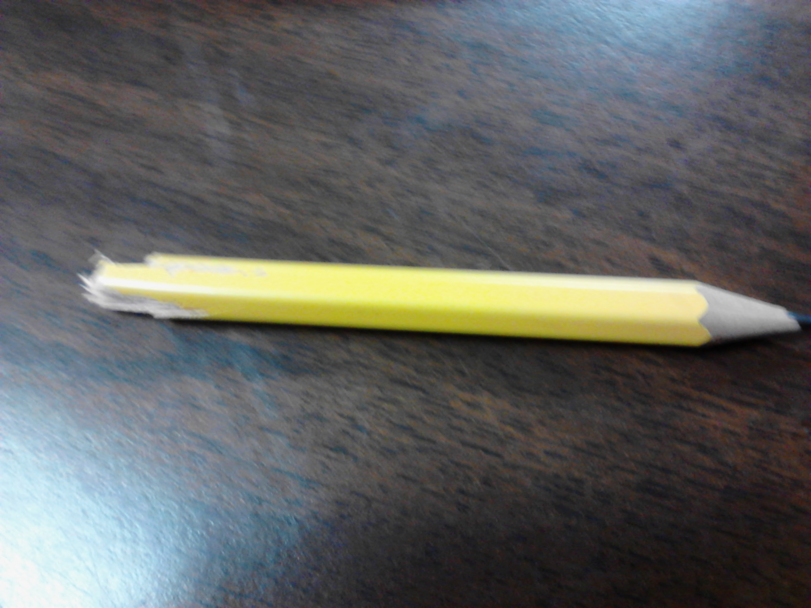
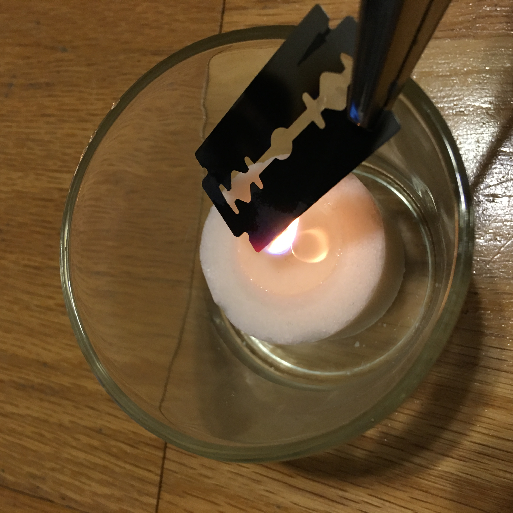

How to Build a Foxhole Radio

Time Required: 60 - 90 minutes
Supplies You'll Need:
- Toilet Paper Roll
- #26/#30 AWG Magnet Wire
- Antenna or Audio Wire
- Thumb Tacks
- Razorblade
- Blowtorch, candle, or other source of intense heat
- Paper Clips
- The Base
- Wire Preparation
- The Diode
- The Circuitry
- First Part of the Tuner
- Second Part of the Tuner
- Antenna
- Perk Your Ears
First of all, you'll need something to put your radio supplies on. It could be a piece of cardboard or a block of wood--as long as it isn't conductive.
Next, scrape between one and two inches of the coating off of magnet wire with something sharp--the razorblade will work.
Now, take a toilet paper roll and poke a hole in each end. Wrap the magnet wire around it, knotting the ends off through the holes. The more you wrap, the long the reception distance.
Cut off some more magnet wire, scraping off the ends, and connect it to the end of the diode.
Grab a sharpened pencil (make sure it's graphite) and break it in half. You will be using the sharp end to find channels.
Take your razorblade and something that can reach high temperatures (we recommend a blowtorch, but not everyone has one laying around, so a candle will do), and start heating the blade until it turns to a purplish blue. You'll need to put the sharp end of the pencil on the blue part to find a channel.
Finally, take a metal antenna or a coil of audio wire and connect it to the magnet wire. Get some more magnet wire, connect it to the base on one end, and attach it to a 3-pronged AC adapter. Plug the adapter into the wall to establish a ground connection.

Whew! Now just find something that can output the sound, like headphones, and connect the inner wires to the base.